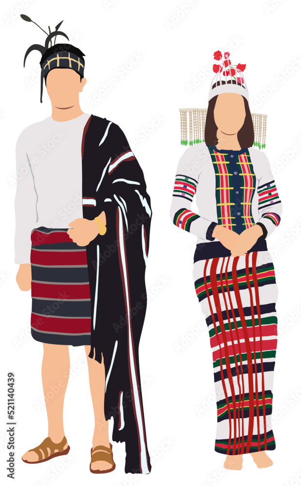

Mizoram's cuisine is mild, zesty and tinted with influences of North Indian and Chinese cuisines. Like in most of the North-East regions, rice is a staple and usually goes with a non-vegetarian preparation, usually fish and with fresh, local and seasonal vegetables.
Traditionally, the Mizoram style of serving food is on the banana leaves which gives the food an enticing and irresistible taste and flavour to it. While the food here is cooked in very little oil, the people here like to have their food prepared in mustard oil. Bamboo shoots are also a staple and duck, quite popular. Misa Mach Poora, Vawksa Rep, Arsa Buhchiar, Koat Pitha, Poora Mach, Dal with eggs as well as preparations of shrimp are the famous delicacies of Mizoram.
A local speciality that must be savoured while here is Bai which is a preparation of pork, spinach, bamboo shoots and some steamed vegetables. You might also want to sip into Lubrusca grape wine and Zu (a form of tea), favourite beverages of the state. Paanch Phoron Torkari and Chhum Han are a few other items you should try while in Mizoram
Mizoram’s traditional dress is quite different than the others. They wear a skirt with vertical embroidery and a full-sleeve top. This is the festive attire in this region. Men wear loose trousers with a leather belt.